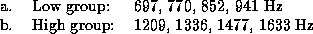
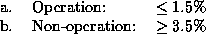
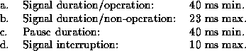

DTMF signaling has many applications such as telephone dialing, data entry, credit checking, and voice mail system control. A DTMF signal consists of two superimposed sinusoidal waveforms with frequencies chosen from a set of eight standardized frequencies. These frequencies should be generated and detected according to the CCITT Recommendation Q.23 [7] and Q.24 [8]:


